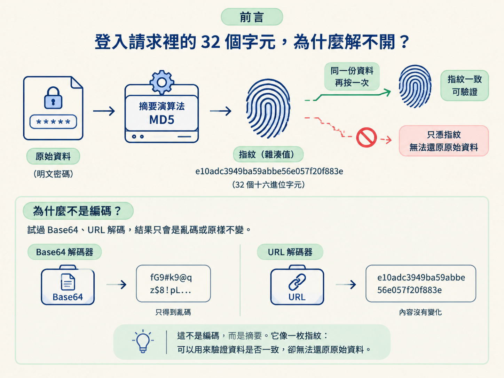
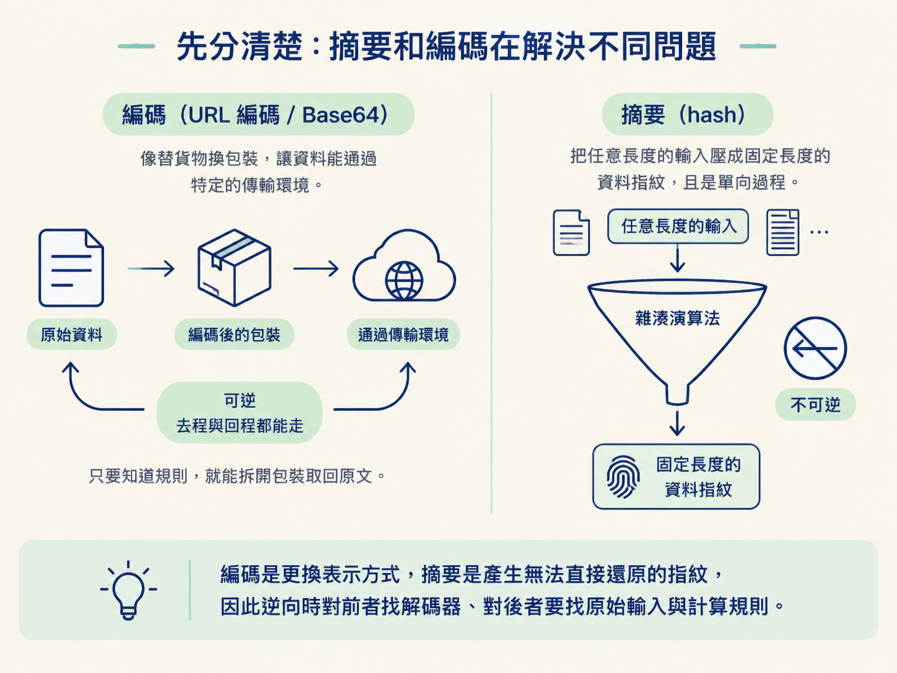
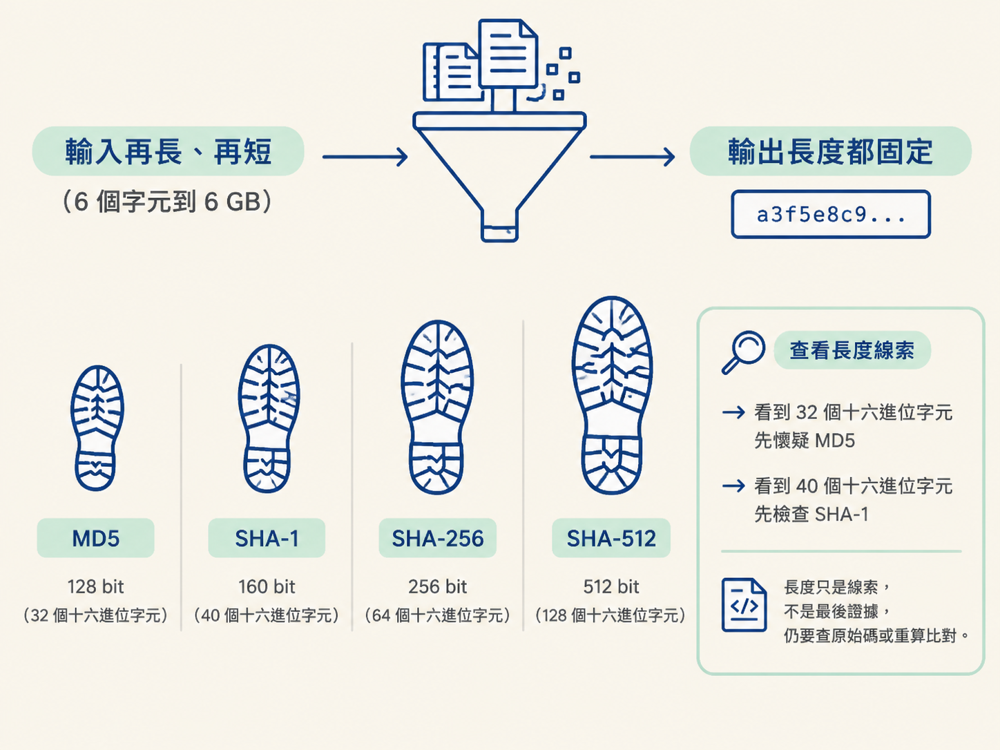
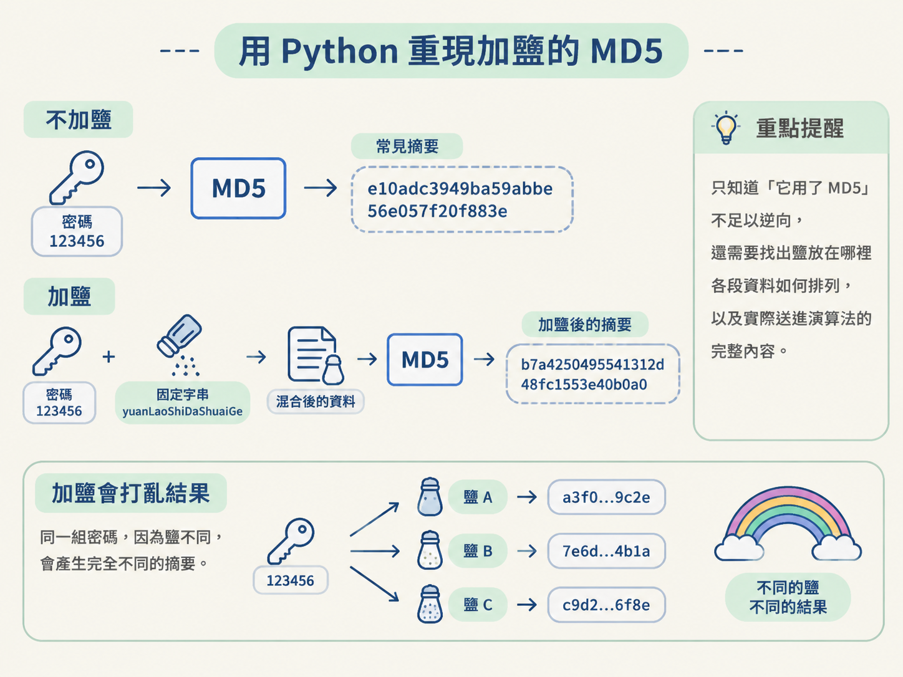

從封包中的陌生字串判斷它是否可能是摘要，理解摘要「不可逆、定長、決定性」的特徵，並用 Python 的 hashlib 重現 MD5、SHA 與加鹽寫法。
你在 DevTools 的 Network 面板檢查登入請求，發現 pwd 欄位不是明文，而是 e10adc3949ba59abbe56e057f20f883e。它剛好有 32 個字元，而且全部由十六進位字元組成。
第一個直覺可能是：「密碼被編碼了，只要找到正確的解碼器就能還原。」於是你試了 Base64，結果只得到亂碼；再試 URL 解碼，內容也沒有變化。
問題不在解碼器選錯，而是這段內容從一開始就不是編碼。它是摘要，就像替資料壓上一枚指紋：你可以拿同一份資料再按一次，確認指紋是否一致，卻不能只看指紋就把原始資料還原。

把它放回「抓取 → 反爬 → 逆向」的大圖來看：抓取時，你先在封包裡發現 sign 或看似亂碼的欄位；遇到伺服器驗證時，這些欄位可能成為反爬門檻；進入逆向後，真正要追的便是網站用了哪種摘要，以及送進演算法前的字串如何組合。
前面介紹的 URL 編碼與 Base64 都可以逆向還原。它們的工作比較像替貨物換包裝，目的是讓資料能安全地通過特定傳輸環境；只要知道規則，就能拆開包裝取回原文。
摘要演算法（hash，雜湊）做的事不同。它會把任意長度的輸入壓成固定長度的資料指紋，而且刻意設計成單向過程。它常被用於請求簽名、密碼儲存，以及檢查檔案是否被修改。
因此，看到陌生字串時，不要一律往「解碼」的方向衝。若它符合摘要特徵，逆向的目標通常不是把它解回去，而是找出原始輸入與計算規則，然後重算出相同結果。

在爬蟲與逆向情境中，常見的例子是 sign 參數。網站可能先按照規則排列參數，再接上一段固定密鑰，最後交給 MD5 或 SHA，得到一串十六進位摘要。
伺服器收到請求後，會按照相同規則再算一次。兩邊結果相同，代表送來的資料符合預期；如果內容途中被改動，重新計算出的摘要也會不同。
另一個用途是儲存密碼。資料庫保存摘要，而不是直接保存明文。摘要也能用來校驗檔案：只要檔案內容有變化，計算結果通常就會跟著改變。
這些用途都建立在三個核心性質上：不可逆、定長與決定性。理解這三者，才能知道摘要適合做什麼，又不能拿它做什麼。
摘要演算法是單向的。你可以把明文算成摘要，卻無法從摘要直接還原明文；即使知道使用的是 MD5，也沒有對應的「MD5 解碼」可以把內容變回去。
原因在於，大量輸入資訊已經在計算過程中被壓縮掉了。不論輸入只有 6 個字元，還是大到 6 GB，最後都只會留下固定長度的結果。這就像把一整本書壓成一枚小小的指紋，指紋可以拿來比對，卻裝不回原本的每一頁文字。
不過，不可逆不等於無法被猜中。如果原始內容是 123456 這類常見弱密碼，攻擊者可以逐一嘗試候選密碼，計算每個候選值的摘要，再與目標結果比對。彩虹表則是預先整理好的摘要對照資料。
因此，網站通常會加鹽（salt），也就是在密碼前後加入額外字串後再計算。不同的鹽會讓同一組密碼產生不同摘要，增加直接使用既有對照資料破解的成本。
同一種摘要演算法的輸出長度固定，不會因為輸入內容變長，結果也跟著拉長。常見演算法的長度如下：
| 演算法 | 輸出位元 | 十六進位字元數 |
|---|---|---|
| MD5 | 128 | 32 |
| SHA-1 | 160 | 40 |
| SHA-256 | 256 | 64 |
| SHA-512 | 512 | 128 |
這張表在查看封包時很實用。若某個欄位是 32 個十六進位字元，可以先懷疑它是 MD5；若是 40 個，則可以先檢查 SHA-1。字串長度就像演算法留在現場的鞋印，能幫你縮小範圍。

但長度只是線索，不是最後證據。它適合用來提出候選演算法，不能單憑字元數就斷定答案。接下來仍要查看 JavaScript 原始碼，或用相同輸入重算並比對結果。
摘要具有決定性。同一份輸入，無論今天或明天計算，也無論換到哪一台電腦，只要演算法與輸入位元完全相同，結果就會一致。
相反地，只要輸入稍微改變，輸出通常就會變得完全不同。多一個空格、少一個字元，甚至只是參數排列順序不同，都可能讓整段摘要面目全非。
這正是摘要適合拿來做一致性檢查的原因。兩份資料算出的摘要一致，就能用來確認內容是否相同；逆向簽名失敗時，也應優先檢查輸入字串，而不是只盯著演算法名稱。
找到疑似摘要後，可以用 Python 的 hashlib 重現網站的計算結果。它有兩種常見用法：一種是一次把整段資料交給演算法；另一種是先建立摘要物件，再透過 update() 分段餵入資料。
分段處理適合資料很大、需要分次讀取的情況，也能貼近網站逐段拼接簽名內容的寫法。以下程式先在建立 MD5 物件時放入固定的鹽，再把密碼 123456 交給 update()：
from hashlib import md5, sha1, sha256, sha512
data = "123456"
m = md5("yuanLaoShiDaShuaiGe".encode())
m.update(data.encode()) # data字节
…
print(m.hexdigest()) # b7a4250495541312d48fc1553e40b0a0沒有這段鹽時，123456 常見的 MD5 結果是 e10adc3949ba59abbe56e057f20f883e。加入 yuanLaoShiDaShuaiGe 後，結果變成 b7a4250495541312d48fc1553e40b0a0。
這個對比也說明了逆向時為什麼不能只知道「它用了 MD5」。你還需要找出鹽放在哪裡、各段資料如何排列，以及實際送進演算法的完整內容。

update() 會依序累加內容update() 可以呼叫多次。先餵入一段，再餵入另一段，效果等同於把兩段內容依原順序串接後一次計算。
下面先送入 "123 "，注意結尾保留了一個空格，再送入 "456"。因此，它等同於計算 "123 456"，而不是 "123456"：
data = "123 "
data2 = "456"
m = md5("yuanLaoShiDaShuaiGe".encode())
m.update(data.encode()) # data字节
m.update(data2.encode()) # data字节
print(m.hexdigest())
print(m.digest())這裡也示範了兩種輸出形式。hexdigest() 會回傳十六進位字串，也就是封包中最常見的樣子；digest() 則回傳原始位元組，適合把摘要當成二進位資料繼續處理，例如接進下一層加密。
如果目標是比對封包中的十六進位欄位，通常先使用 hexdigest()。只有後續流程明確需要原始位元組時，才改用 digest()，否則兩種格式混用會讓比對看起來完全對不上。
把前面的 md5 換成 sha1、sha256 或 sha512，操作方式相同，主要差別在輸出長度。
在 JavaScript 原始碼中看到 CryptoJS.MD5(...)，可以用 Python 的 hashlib.md5 對照；看到 CryptoJS.SHA1(...)，則可對應到 hashlib.sha1。
不過，辨認演算法通常只是入口。真正容易卡住的地方，是括號內的輸入究竟如何產生：參數有沒有排序、是否插入固定字串、空格是否保留，以及各段內容的串接順序。只要其中一處不同，最後結果就不會相同。
摘要會把任意長度的輸入轉成固定長度的資料指紋。它不可逆，但弱輸入仍可能被逐一猜測；它長度固定，因此可用 32、40、64 或 128 個十六進位字元作為初步線索；它具有決定性，所以輸入完全相同時，結果也一定相同。
在 Python 中，可以用
hashlib重現 MD5 與 SHA。update()能分段累加輸入，hexdigest()取得十六進位字串，digest()則取得原始位元組。
把這個觀念接回前面的 URL 編碼與 Base64：編碼是在更換資料的表示方式，摘要則是在產生無法直接還原的指紋。逆向時若判斷它是摘要，就不要繼續尋找不存在的解碼器，而要沿著 JavaScript 的資料流，找出演算法、輸入內容與拼接規則。
下一節會把 URL 編碼、Base64 與摘要的外觀及特徵放在一起，整理成封包判型時可以快速使用的線索。